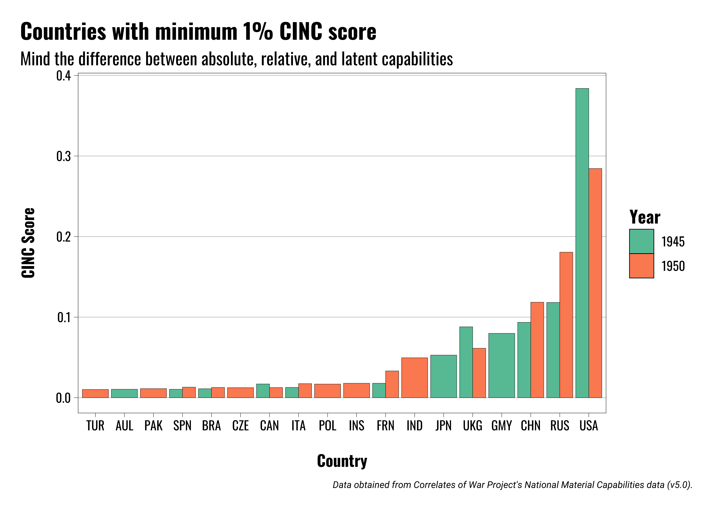
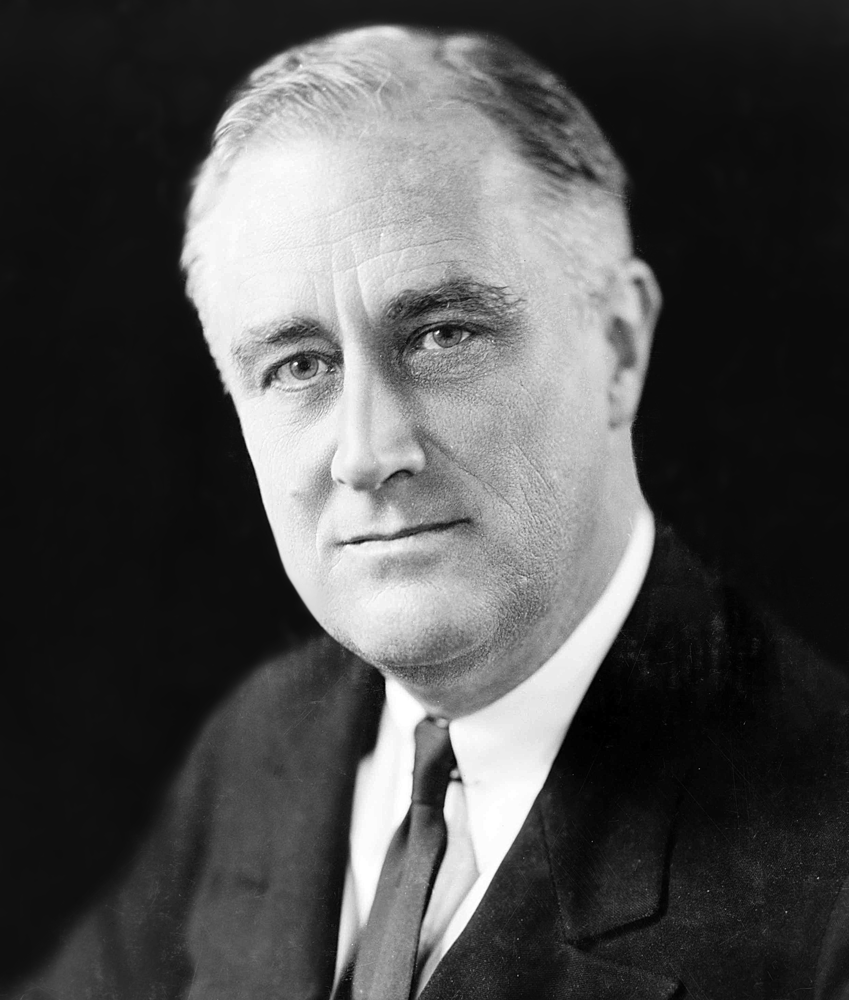
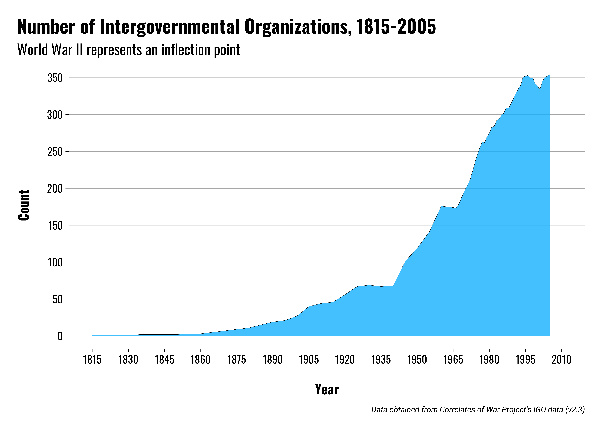

US Foreign Policy
The Cold War and International Relations
Michael Flynn
Professor
Department of Political Science
011C Calvin Hall
meflynn@ksu.edu
2025-09-07
Lecture Overview
Transition from World War II to the Cold War
The emerging divide between West and East
American hegemony and the emerging global orders
- Military and security
- Political and diplomatic
- Economics and trade
Key Questions
How did the events of the late 19th and early 20th centuries shape the development of the Cold War?
Who were some of the key players involved in shaping US foreign policy during the early Cold War years?
What were the key features of the US-led global order that emerges after World War II?
From World War to Cold War
From World Wars to Cold War
President Roosevelt dies April 12, 1945.
President Truman takes office and is informed of the Manhattan Project
May 8, 1945: Nazi Germany surrenders to allies
The war in the Pacific carries on

From World War to Cold War
Japan and the atomic bomb
Invasion?
Demonstration?
Bombing?
From World War to Cold War
Henry Stimson
Secretary of War under Roosevelt and Truman
Opposes calls for demonstration of atomic weapons
Influential in selecting targets

From World War to Cold War
Decision is made to use the bombs
Hiroshima bombed on August 6, 1945
Nagasaki bombed on August 9, 1945
Japan surrenders on August 14, 1945
To right: Replica of “Fat Man”, bomb dropped on Nagasaki

The Emerging Divide
The Emerging Divide
Tensions between the US and USSR go back long before World War II
Longstanding ideological opposition to communism
Soviet skepticism of Western intentions during war (the second front)
Soviets want secure borders in Europe
The Emerging Divide
Key post-war events
Soviets absorb occupied territories, which become the Warsaw Pact States
British begin cutting aid to Greece and Turkey in 1946
Soviets making claims on territory in Iran and Turkey
The Emerging Divide
The Truman Doctrine
First outlined in President Truman’s March 1947 speech before Congress
Promises to support free peoples resisting tyrannical governments
Also lays foundations for foreign aid programs by calling for assistance to Greece and Turkey
To right: President Harry Truman
The Emerging Divide
The Marshall Plan
General George Marshall, Secretary of State under President Truman
June 1947: Delivered Harvard’s commencement speech. The “opening shot” of the Marshall Plan
Catalyst for what would become the Organization for Economic Cooperation and Development (OECD)
To right: General George C. Marshall
The Emerging Divide
George F. Kennan
Director of Policy Planning, US State Department, Ambassador to the USSR
Father of containment doctrine
Author of the “Long Telegram” and the infamous “X Article” in Foreign Affairs
Emphasis on non-military resistance to Soviet expansion

The Emerging Divide
Paul Nitze
Contemporary of George Kennan
Second Director of Policy Planning
Primary author of NSC–68
Supported a more militant version of Kennan’s containment strategy
The Emerging Divide
Later events:
Communist coup in Czechoslovakia (1948)
Yugoslav–Soviet split (1948)
Communist victory in China (1949)
USSR detonates atomic bomb (1949)
Chinese-Soviet Alliance (1950)
Korean War (1950–1953)
Communist parties gain strength in Europe after WWII
American Hegemony
American Hegemony
What is hegemony?
Hegemony is a preponderance of global power
American Hegemony
US emerges from World War II with unparalleled economic and military power
Europe, not so much
US foreign policy focuses on three goals:
Checking Soviet expansion
Promoting recovery of war-torn areas
Promoting greater global integration
American Hegemony
US embarks on a massive order-building project
The emergent order is often referred to as a “liberal hegemonic” order, or as “liberal internationalism”
Three central pillars
Security
Diplomacy and governance
Economic
American Hegemony
What does a liberal internationalist/hegemonic order look like?
It emphasized a few key concepts
US leadership (with constraints)
Primacy of a rules-based system of global governance
Multilateral cooperation and in economic and security affairs
American Hegemony
Security affairs:
North Atlantic Treaty Organization (NATO)
Central Treaty Organization (CENTO)
United Nations (UN)
Southeast Asia Treaty Organization (SEATO)
American Hegemony
Diplomatic affairs:
Establish standards and principles to govern the post-War world
Provide forum for dispute resolution between states
Determine the fate of colonial territories and societies
American Hegemony
Diplomatic affairs:
United Nations (UN)
International Atomic Energy Agency (IAEA)
World Health Organization
United Nations Human Rights Council
American Hegemony
Promoting democracy
US seeking to promote democracy abroad
Much of this is rooted in opposition to communism
Much of this effort conflicts with treatment of minority Americans at home
Many fear that US efforts to promote democracy and the rule of law will be applied unevenly across the international landscape
To right: James Byrnes, Secretary of State 1945-1947
American Hegemony
Economic affairs:
Promote greater economic integration among all states
Remove barriers to trade and investment
Reaction to interwar period and Great Depression and move to autarky
American Hegemony
Economic affairs:
Bretton Woods System
General Agreement on Tariffs and Trade (GATT)
World Bank
International Monetary Fund (IMF)

American Hegemony
What does all this mean for US foreign policy?
Big changes, that’s what!
- US forges a series of long-term military alliances
- New economic and military aid programs
- Building up a nuclear arsenal
- Maintaining long-term overseas military deployments
- Maintaining high levels of military spending
- Using military force abroad with greater regularity and intensity
- Focus on political demands from less developed countries
- Economic and monetary policies more tightly entwined with rest of the world
- Policy goals require greater international coordination (i.e. multilateralism)
- Greater attention on disparities between US domestic policies and foreign policies

Accepting American Leadership
European considerations:
- Military weakness
- Economic weakness
- Intra-European competition
Other Countries:
- US position on Anti-Imperialism
- US rhetoric on self-determination, democracy, and human rights
- Support for particular domestic political and military factions
- Economic and/or military assistance
- Access to American markets